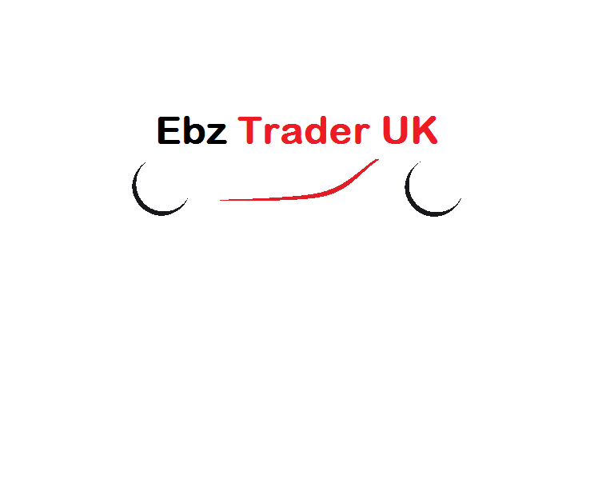

About Us
EBZ Trader has been the UK's biggest digital automotive marketplace
EBZ Trader is the heart of vechicle buying websites and operates the UK'S largest digial automotive marketplace.
With its market-leading poistion it enbales to generate and collect amounts of data on the UK's automotive marketplace and leverage, it produces such a data to create a suitable prodcuts of which to help retailers in buying cars.
In addition, on an average more than 31 million customers visit the site each month, EBZ Trader UK has also got the leading online destination for car owners and shoppers. By offering eat to understand information we help consumers to research, find the best price for new and used vechiles by providing excellent quality service that the consumer expecte's from us.